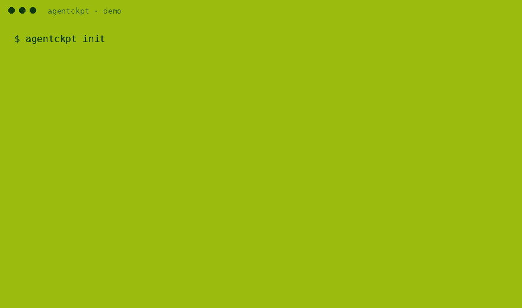

UNDO FOR CODING AGENTS · MIT · ZERO DEPS
SAVE BEFORE THE AGENT RUNS. CONTINUE WHEN IT BREAKS.
The agent runs. Touch the flag first: agentckpt snap saves the whole tree as b66469f.
agentckpt snapshots your whole working tree, untracked files included, into a private store under .agentckpt/ while Codex, Claude Code, Gemini CLI, OpenCode or a Cursor agent works. When a turn goes wrong, continue from any save. Your branches, index and history are bedrock: never touched.
PROLOGUE WHY THIS EXISTS
HINT 1 Codex removed /undo. The issue asking for reliable rollback is still open: openai/codex#9203 (522 upvotes).
HINT 2 git restore only knows tracked content. When the agent deletes a new file, git can't bring it back (v2ex.com/t/1220282).
HINT 3 Stash and WIP commits go through your index, reflog and branch, so agent noise ends up in history (v2ex.com/t/1218209).
SO agentckpt keeps saves in a shadow repo, git --git-dir=.agentckpt/git --work-tree=., with its own index. Python 3.9+ and git. Zero dependencies.
WORLD 1-1 INSTALL
Python 3.9+ · git on PATH · not on PyPI yet
- TRY IT
uvx --from git+https://github.com/Blackman99/agentckpt agentckpt demo - INSTALL
pipx install https://github.com/Blackman99/agentckpt/releases/download/v0.1.0/agentckpt-0.1.0-py3-none-any.whl - PLAY
agentckpt init && agentckpt snap -m "before agent"
The wheel comes from GitHub Releases v0.1.0.
WORLD 1-2 / 1-3 SAVE · CONTINUE
One agent turn, step by step. Scroll, or pick a step.
WORLD working tree
SAVE SLOTS .agentckpt/git
BEDROCK your .git
STEP 1 · INIT
INIT
$ agentckpt initCreates
.agentckpt/and appends.agentckpt/to your.gitignore. That's the only file of yours it edits.SNAP · TOUCH THE FLAG
$ agentckpt snap -m "before agent" b66469f 3 files before agentStages tracked and untracked files into the shadow index and commits them there.
THE AGENT TURN · BLOCKS BREAK
# edits a.txt, deletes untracked.md, # creates new.pyLeave
agentckpt watchrunning to save more checkpoints automatically.RESTORE · CONTINUE?
$ agentckpt restore b66469f Skipped 1 conflict(s) … re-run with --force ! a.txt Restored 2 file(s) from b66469f $ agentckpt restore b66469f --force Restored 3 file(s) from b66469fBytes go straight back into the tree.
new.pystays, since restore never deletes.CHECK THE BEDROCK
$ git log --oneline 63fc0ae baseNo
add, nocommit, no checkout and no branch moves in your real repo.
ITEMS 8 COMMANDS
Exit 0 ok · 1 partial · 2 error
initshadow storesnapsave a checkpointwatchauto-snap, pollinglslist, --jsondiffvs tree or --torestore--force · --pathprune--keep 50doctorsanity check
REPLAY agentckpt demo, the same run CI does

WORLD 1-4 KNOWN GLITCHES
Limits in v0.1.0
- Restore doesn't delete. Files the agent created after the snap stay. Use
agentckpt diff <id>to see them. - Only what it saw. Gitignored files and files over 10 MiB (
--max-bytes) aren't stored. - Polling, not hooks.
watchcan catch a half-written state. Agent hooks are planned for v0.2. - An undo buffer, not a backup. The store lives in the project, so
git clean -fdxremoves it.